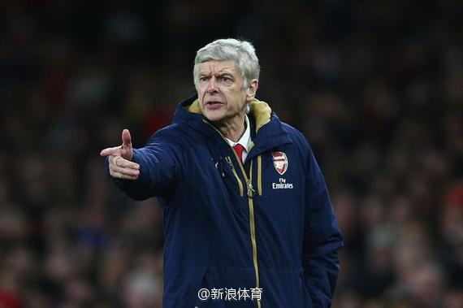

还有这样的。老板以解雇施压温格让温格花老板的钱买巨星？@新浪体育:【买买买!曝温格拒下课要买巨星】最近，阿森纳从各项冠军争夺战中接连出局，枪手又面临四大皆空的窘境。虽然教授已经稳坐阿森纳教练席接近20年，但他无疑也感受到了巨大的压力。据报道，温格这一次准备向所有人妥协，他决定为阿森纳购入巨星，藉此来保住自己的帅位。详情戳：买买买！曝温格拒下课买5巨星 
 买买买！曝温格拒下课买5巨星
买买买！曝温格拒下课买5巨星